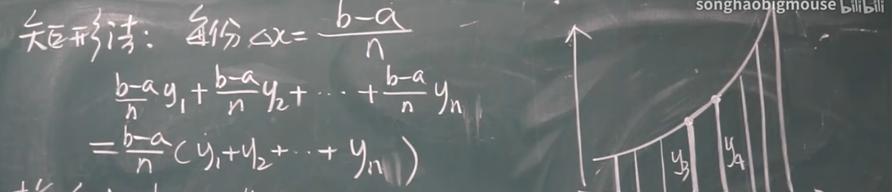

高等数学教程（4）
定积分
概念
定积分是从求解曲边梯形的面积产生的：就是说求解类似于如下的图像的面积
怎么搞？我们试想一下，使用如下的方式：通过把面积切成很小的小块：
由于这些面积可以近似成矩形甚至是梯形，我们可以用面积和近似代替曲边梯形的面积。
数学上是这么
产生了
只要切的够小，我们就可以:$S\approx \sum_{k=1}^n \Delta x_kf(\sigma_k)$
其中$\sigma_k$是小区间上的一个任意点。怎么逼近真实值呢？让点取的密集一些：就是令$\lambda \rightarrow 0$就好了：产生的极限就是面积。
我们可以引入定积分了：
定义：$f(x)$在[a,b]有界，在[a,b]上任意插入若干个分点（随便插入），产生N个小区间，其长度为:$x_k(0<k\leq n)$,又在区间上任意取一点$\sigma_i$，现在取出这些区间内最大长度的长度值记成$\lambda$,也就是$\lambda=max\{\Delta x_1,\Delta x_2,…\Delta x_n\}$。这下有了假设和的极限：$\lim\limits_{\lambda \rightarrow 0} \sum_{k=1}^n \Delta x_kf(\sigma_k)$ 假设他存在：就引入这样的记号：
其中a,b叫积分下限和积分上限，被积函数是f(x),积分区间是[a,b],积分变量是x
注意，这个值（或者说这个定积分）与积分变量无关，也就是说：
定理1：函数只要连续就一定可积。
定理2：函数有界且有有限个间断点也可积。
定积分的几何意义
1.$f(x)\geq0$
就是阴影部分面积
2.$f(x)\leq0$
注意是阴影部分面积的相反数，这是因为：
中：$f(\sigma_k)<0$
矩阵法
我们使用切分成矩阵的方式来计算定积分

梯形法
看看就好，不用他来计算
性质
1）a=b下：$\int_a^b f(x)dx=0$
2)$\int_a^b f(x)dx=-\int_b^a f(x)dx$
3)$\int_a^b (\alpha f(x)+\beta g(x))dx=\alpha \int_a^b f(x)dx+\beta\int_a^b g(x)dx$
4)$\int_a^b f(x)dx=\int_a^c f(x)dx+\int_c^b f(x)dx$(切成两块加)
5)$f(x)\equiv 1,\int_a^b 1dx=b-a,\int_a^b kdx=k(b-a)$
6)$f(x)\geq 0,\int_a^b f(x)dx\geq0$
7)$f(x)\leq 0,\int_a^b f(x)dx\leq0$
8)$f(x)\leq g(x),\int_a^b f(x)dx\leq\int_a^b g(x)dx$
来点推论：
1.
2.函数的极大值和极小值为$M,m$
9)定积分中值定理：$f(x)$连续,$\exists \xi\in[a,b]$
这个定理可以用来化简带有积分的极限
微积分的基本公式
积分上限函数
我们把一个限变成一个变量，有点像把一边可以自由滑动，这样就有一个变限积分函数，我们把目光集中在x上：
这样定积分就从一个值变成一个函数
定理1：
这样来看，$\phi(x)$就是$f(x)$的一个原函数。值得一提的是：
上面那个可能太抽象，可以使用性质2）插入一个常数点a
牛顿莱布尼兹公式
其中$F(x)$是$f(x)$的原函数。
例如：$\int_0^1 x^2dx$
解：=$\frac{1}{3}x^3|_0^1=\frac{1}{3}$
计算方法
换元法
定理：我们令$x=\varphi(t)$使之$\varphi(\alpha)=a,\varphi(\beta)=b$
例题：
1）$\int_0^a\sqrt{a^2-x^2}dx$
解：$令x=a\sin t$,$dx=a\cos tdt$
$=\int_0^{\frac{\pi}{2}}a^2\cos^2tdt=\frac{\pi}{4}a^2$
一些技巧：
1）$[-a,a]$下：$f(x)$偶：$\int_{-a}^{a}f(x)dx=2\int_{0}^{a}f(x)dx$,$f(x)$奇则为0。
2）$\int_{0}^{\frac{\pi}{2}}f(\sin x)dx=\int_{0}^{\frac{\pi}{2}}f(\cos x)dx$
3)$\int_{0}^{\pi}xf(\sin x)dx=\frac{\pi}{2}\int_0^{\pi}f(\sin x)dx$
（2）（3）怎么说？
2）令：$x=\frac{\pi}{2}-t,dx=-dt$就可以了
3）令：$x=\pi-t,dx=-dt$带入之后化简一下得到：
(上面中因为与积分变量无关由此可以直接替换)
例题：$\int_0^{\pi}\frac{x\sin x}{1+\cos^2x}dx=\frac{\pi}{2}\int_0^{\pi}\frac{\sin x}{1+\cos^2x}dx=-\frac{\pi}{2}\arctan(\cos x)|_0^\pi=\frac{\pi^2}{4}$
4)$\int_a^{a+T}f(x)dx=\int_0^Tf(x)dx$(f(x)是一个周期函数，周期是T)
5）$\int_a^{a+nT}f(x)dx=n\int_0^af(x)dx$
分部积分
首先回顾$\int udv=uv-\int vdu$这个公式，于是，在定积分的也自然就是：
例如：$\int _0^\frac{1}{2} \arcsin xdx$
注意到$x$也是一个函数：于是$\int _0^\frac{1}{2} \arcsin xdx=x\arcsin x|_0^\frac{1}{2} - \int_0^\frac{1}{2} \frac{x}{\sqrt {1-x^2} }dx=\frac{\pi}{12}+\frac{\sqrt 3}{2}-1$
也有上面提到的方法一块用的积分：
$\int_0^1 e^\sqrt{x}dx$
令:$t=\sqrt x$, 则:$2\int_0^1 te^tdt$=$2te^t|_0^1-2\int_0^1 e^tdt=2$
反常积分
无穷限的反常积分
什么叫反常积分呢？就是说积分区域下函数在这一点反常。比如说，因为积分区域含有无穷的积分：
或者是这样的：
这样的积分是无穷限的反常积分。我们不妨采用动态的方法：
这下也有类似的：
牵扯到了极限，因此：如果上面的极限是存在的，那就：之人格积分是收敛的，反之发散。
还有上下限均是无穷的积分，仍采用上面的处理方式。在实际求值的时候，也是直接
一个结论：对于
p>1收敛，p$\leq 1$手来你
反常积分：无界函数的反常积分
什么意思？就是说函数在某一点没有定义，我们的积分区域却包含了它。比如说
结合上一小节的类似方法，我们得到
类似的：
如果这样的点在中间，我们就拆开积分区域就好了。
补充：$\Gamma(s)$函数
$\Gamma(s)$函数是这样定义的：
具有以下非常好推导的性质：
基于2)，我们发现了这个函数的一个奇妙公式：
补充：比较审敛原理
我们假设:$f(x)$和$g(x)$在[a,$\infty$ ]上连续，$60 \leq f(x)\leq g(x)$如果：
很好理解：大哥收敛小弟也收敛，小弟嚣张大哥肯定也嚣张。
补充：比较审敛法
设$f(x)$在[a,$\infty$]连续(a>0)，且$f(x)\geq 0,\exists M>0,p>1$
如果使得:$f(x)\leq \frac{M}{x^p}$那就$\int_a^{+\infty}f(x)dx$收敛
反之：$f(x)\geq \frac{M}{x},$那就$\int_a^{+\infty}f(x)dx$发散
补充：绝对审敛法
如果$f(x)$在设$f(x)$在[a,$\infty$]连续（a>0), $\int_a^{+\infty}|f(x)|dx$收敛，那么$\int_a^{+\infty}f(x)dx$收敛。
最后不难得到这个定理
补充：无界函数反常积分的审敛法
回到这个积分
$x=a$显然是一个瑕点$q<1$收敛，q$\geq$1发散。
基于这个积分，我们再次应用比较原理：
如果$f(x)$在(a,b]连续,f(x)$\geq$0,如果$\exists M>0$及其$q<1$使得
补充：极限审敛法
如果$f(x)$在(a,b]连续,f(x)$\geq$0，$x=a$为$f(x)$的瑕点
1）$\exists 0<q<1$使得$\lim\limits_{x\rightarrow a^+}(x-a)^qf(x)=A$直接说明一件事：$\int_a^b f(x)dx$收敛。
2）类比的$\lim\limits_{x\rightarrow a^+}(x-a)f(x)=A$或者是$\infty$，我们直接认为$\int_a^b f(x)dx$发散。
定积分的元素法
回到定积分的这个定义式：
本质上，这样的一个定积分就是描述瞬时元素在某一个维度的积累效应的量化程度，这就是说：它既可以用来描述面积，又可以描述体积，只需要我们掌握了相应的边界函数，只要对应积分即可。
比如说，这个的体积就是面积函数A(x)对于高度x的积分
补充一下极坐标
我们重新用一种全新的角度来看待坐标系：我们改用距离原点的距离+偏离X轴正方向的描述方法描述点的坐标。
这样，一个点就总是可以表示为$A=(\rho, \theta)$，比如说极坐标下(1,1)变成了$(\sqrt 2,\frac{\pi}{4})$,现在，我们试着求：
这个阴影面积：怎么办？延续老方法：假设点沿着曲线挪动一丁点，那么我们的产生的微小的面积则是：
然后从哪到哪？$\alpha$到$\beta$。
结束。
平面图形的面积
直角坐标系
我们说函数相交也可以产生一些面积
这个怎么求呢？
我们的差面积就是：
这样的差是X型的面积积分，因为我们拿X作为梯形的高
那就还有Y型面积：
类比的：
也即是：
X:$S=\int 上-下dx$
Y:$S=\int 右-左dy$
总结一下：我们对面积先大致画出来图长什么样：如果是这样的
就这样使用X，Y对应当打，如果不好判断，就都先试试，哪个更加容易用哪个。
举例：求$y=\frac{1}{2}x^2$,$y=\frac{1}{1+x^2}$在$x \in [-\sqrt 3,\sqrt 3]$下的定积分。
我们可以做出图像：
砍开来看：
随后使用偶函数的对称性结束计算。
求椭圆的面积：$\frac{x^2}{a^2}+\frac{y^2}{b^2}=1$
可以拆开四分之一的部分$S_1=\int_0^aydx$
现在，我们引入椭圆参数方程来消去参数：
来看看变成什么了：
这就是为什么：
极坐标下
回忆前面所叙述的：对于方程$R=\rho (\theta)$
比如说：$\rho=a\theta$
旋转体体积求法
说白了可以切成以$f(x)$为半径的圆，在叠起来（求积分）
是通过
派生来的，只是因为面积恰好是圆。
但是，这样的体积求解的是绕X轴的。绕Y轴的怎么办哪？
简单：那就改写方程为$x=x(y)$就好了：
弧长的求解
通用：
回来看看这个参数方程：
弧微分很容易说：
于是：
作为积分结果，就是弧长。
以此为源头，开始推广其他的公式：
直角坐标系下
假如参数方程很容易被表达为$y=y(x)$，那我们就：
那带入：
再积分：
极坐标系下
如果不知道的话：科普一下
所有呢，求个导：
老样子：
嘛，不就完事了！